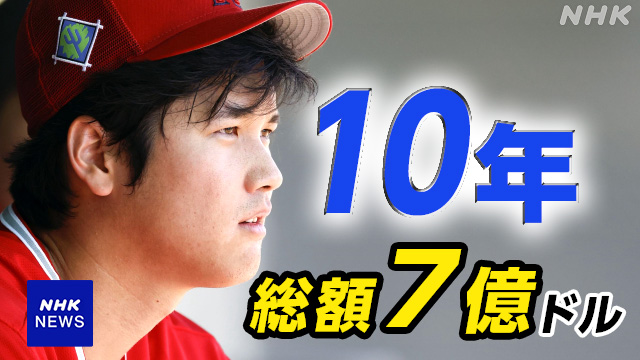

HTML/CSS 中間課題
高度情報工学科 4231106 波多野夢斗
最近の気になるニュース紹介
-
大谷翔平ドジャースと大型契約発表

- 大谷選手は岩手県出身であるとともに移籍先について世界中で話題となっていたので選びました。
- 大谷選手はおそらくこの10年契約で現役生活を終えると思いますが、エンゼルスにいても
優勝までは手が届かないのかなとは思っていたので、優勝チームで優勝しているところを見ら
れるのかと思うとわくわくします。
-
「道路は人間のもの」 ハトひき殺した疑い、タクシー運転手逮捕

- ハト轢いただけでも逮捕されるのかと驚いたから選びました。
- このニュースは道路にいたハトを轢いてしまったことで鳥獣保護法違反となり逮捕されてしまった
事件です。自分もバイトの際などに車を運転しますが、道にハトではなくとも鳥や生き物がいるこ
とがあるので、人間以外にも気を付けながら運転しなければいけないなと思わされるニュースでした。